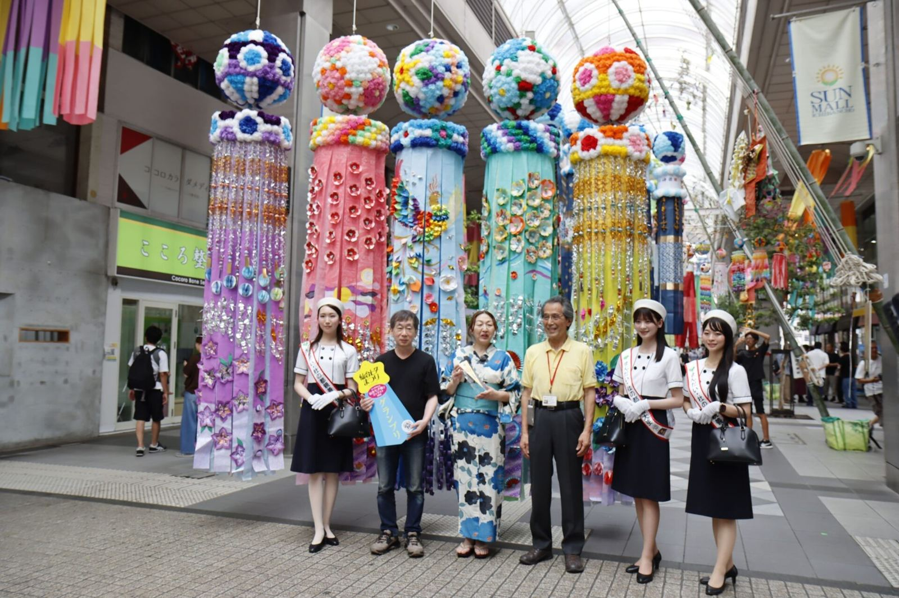

Festivals · Culture
Sendai Tanabata Festival 2027
- Dates
- –
- Location
- Sendai, Japan
- Format
- In-person
- Category
- Culture
- Industry
- Traditional festival
- Organiser
- Sendai Tanabata Festival Association
- Expected attendance
- 2,000,000
- Official website
- https://www.sendaitanabata.com/
About
Dates are local to the host city (Japan Standard Time, UTC+9).
Topics: Tanabata, matsuri, decorations, tradition.
Official Sendai Tanabata site: '現在では毎年200万人以上が仙台を訪れ' (more than 2 million visitors every year; organiser's general figure).
Sources
- Official — https://www.sendaitanabata.com/